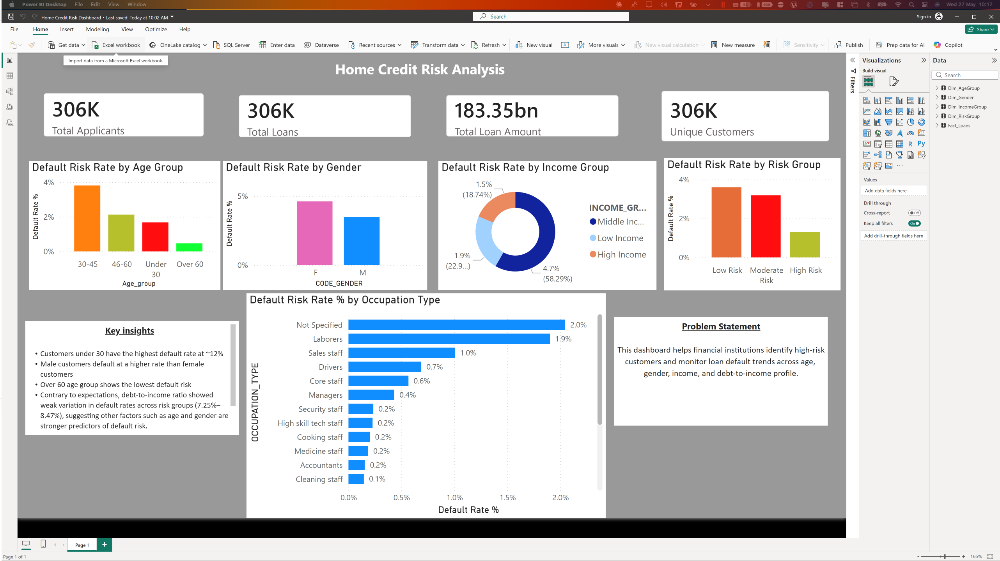

Projects that tell a story.
Home Credit Default Risk — SQL EDA
End-to-end exploratory data analysis on 305,000+ loan applications. Built a multi-CTE risk scoring model assigning APPROVE / REVIEW / REJECT decisions, and flagged a significant data anomaly in DAYS_EMPLOYED that would have skewed downstream models.
| Customer | Credit | Decision |
|---|---|---|
| #10042 | 712 | APPROVE |
| #10087 | 588 | REVIEW |
| #10133 | 431 | REJECT |
Home Credit — Power BI Dashboard
Interactive Power BI dashboard visualising default risk patterns, income distributions, and client segmentation from the Home Credit dataset. Built on Power BI Service for cross-platform accessibility, turning the SQL risk model into a tool stakeholders can actually explore.
View on GitHub →
SA Bank Customer Churn Analysis
End-to-end analysis of 15,000 South African retail banking customers to identify the strongest churn predictors. Built a 5-factor composite risk model in MySQL and visualised findings in a Power BI dashboard with DAX measures and SWITCH(TRUE()) logic.